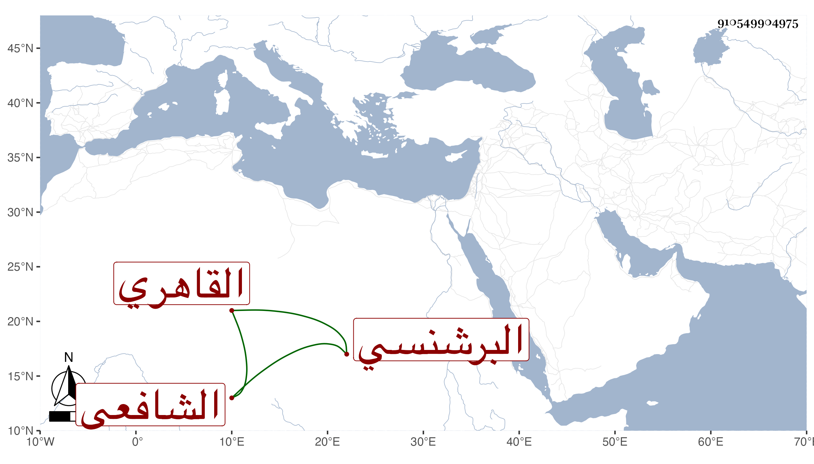

0902Sakhawi.DawLamic.ITO20230111-ara1.EIS1600.910549904975
Biography ID: 910549904975
749
محمد بن عبد الرحمن بن عبد الخالق بن سنان بن عطاء الله الشمس أبو عبد الله البرشنسي بفتح الموحدة وسكون الراء ثم معجمة مفتوحة بعدها نون ثم مهملة القاهري الشافعي . اشتغل قديما وسمع من القلانسي ونحوه وكذا من البهاء بن خليل وتصدر للإفادة والرواية مع الخير والديانة . قال شيخنا في معجمه : سمعت عليه قليلا من آخر مسلم ورأيت له منظومة في علوم الحديث وشرحها وكتابا في أسماء رجال مسند الشافعي وآخر في فضل الذكر ومصباح الفلاح في التصوف ونحوه قوله في أنبائه مات في جمادى الأولى سنة ثمان وقد قارب السبعين روى له عنه جماعة وذكره المقريزي في عقوده وأنه حدث عن الشرف أبي العباس أحمد بن عبد الرحمن بن عسكر البغدادي المالكي بالموطأ سماعا عن أبيه أنا العز الفاروثي .
